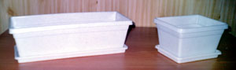
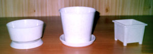
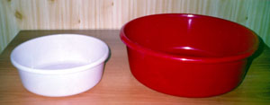
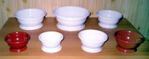
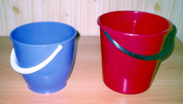
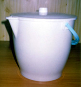
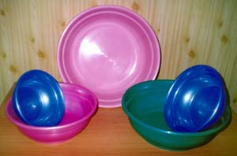
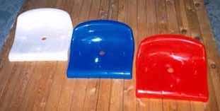
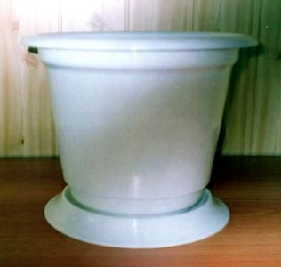

Изделия из пластмасс
У нас Вы можете приобрести разнообразные изделия из пластмасс: горшки, кашпо, вазоны и ящики для цветов, чашки, тазы, ведра, пластмассовые метлы и другие нужные в быту товары из полиэтилена или полипропилена понравившейся Вам формы и расцветки. На применяемые при их производстве материалы и красители имеются сертификаты качества и гигиенические сертификаты.
По заказам изготавливаются прессформы для производства изделий из пластмасс, сиденья для стадионов, запасные части к различному оборудованию отечественного и импортного производства, предметы интерьера и другие изделия из пластмасс.
Ассортимент пластмассовых товаров постоянно пополняется новыми наименованиями. Ниже представлены фотографии некоторых видов нашей продукции.
Горшки для цветов с поддоном. Емкость от 0,75 до 20 литров.
Балконный и квадратный ящики для цветов.
- Кашпо с поддоном
- горшок с поддоном
- горшок "Кактус
- Миска - 1
- миска - 2
- миска - 3
Горшки для цветов "Орхидея" малый и большой.
Тазы хозяйственные (10 и 18 литров).
Вазоны для цветов.
Ведра 7 и 10 литров.
Ведро 12 литров с крышкой (и без крышки).
Тазы емкостью до 25 литров.
Индивидуальные пластмассовые сиденья для стадионов, летних кинотеатров и т.п.
Горшок для цветов (объем 25 литров).
На этой фотографии - один из стелажей нашего фирменного магазина "Терм".